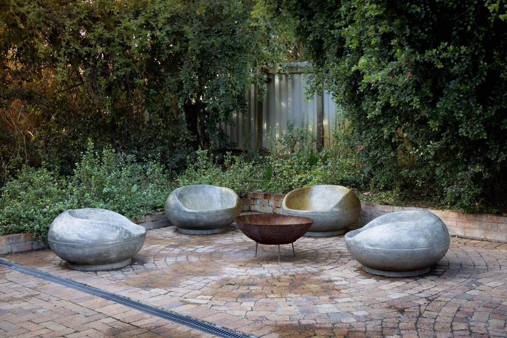
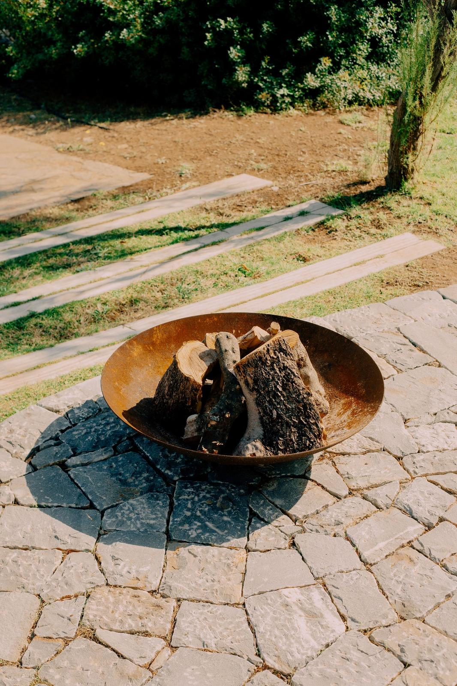
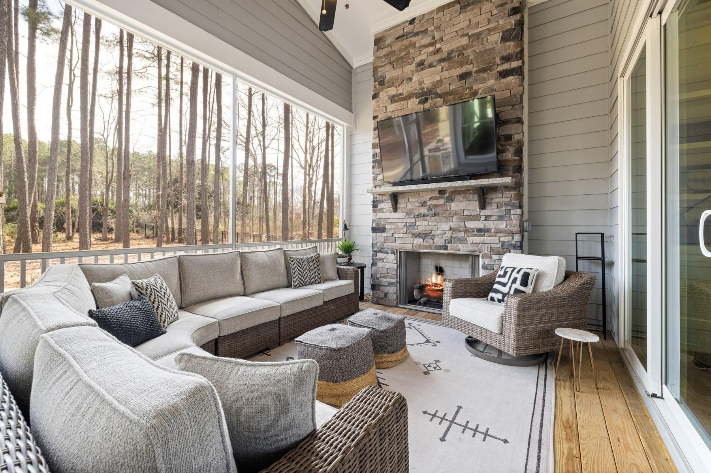
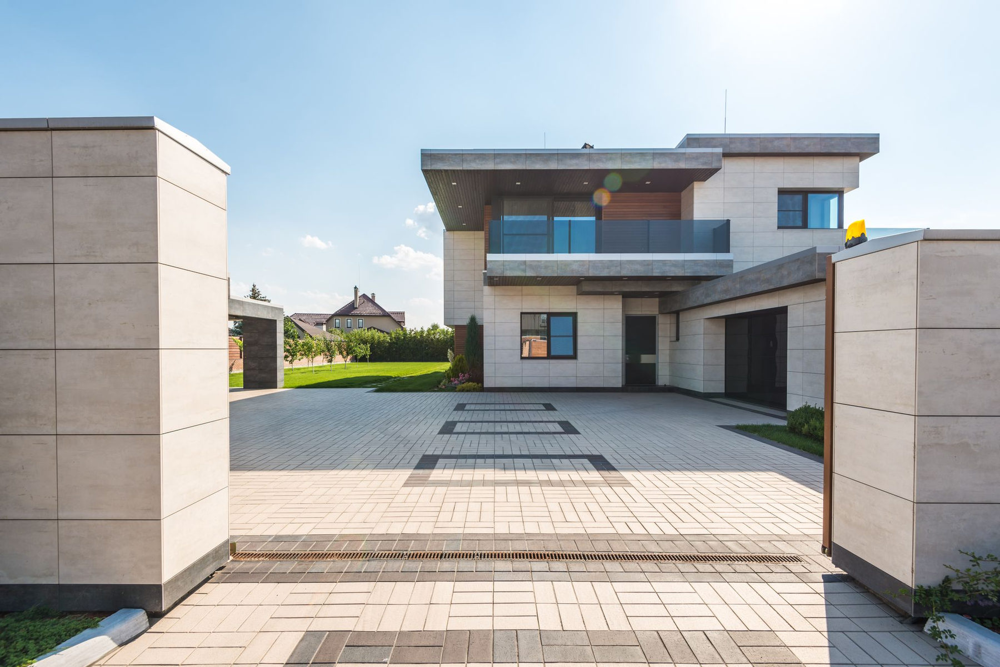

The work
Projects
A sample gallery of finished patios, walls, and fire features. Photos are licensed stock, used to show layout and captions — not real Ledger & Course jobs.
Project gallery








Have a similar yard in mind?
Tell us the lot, the material you like, and how you want to use the space. We will come look and write it up.